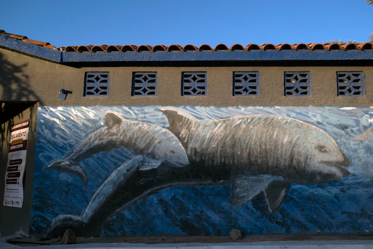
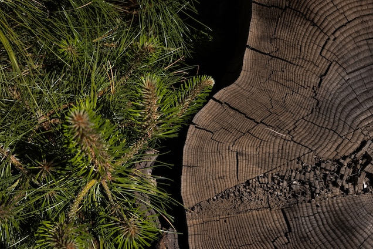

Science
New Method delivers life-saving drugs to the brain-using sound...
Read
History Magazine
The victorious origins of Cinco de Mayo
Read

Science
Fruits and vegetables are less nutritious than they used to be
Read
Today's picks

Animals
Vaquita porpoises may still recover if illegal fishing ends

Magazine Planet possible
4 eco-friendly ways to keep pests out of your yard

Magazine
How this feline became the biggest comeback in cat conservation

History Magazine
This American's Supreme Court fight defined U.S. citizenship

Travel World heritage
To see Saudi Arabia, start with this 'magical' gateway to Mecca

Animals
Forests as 'carbon offsets'? Climate change has other plans